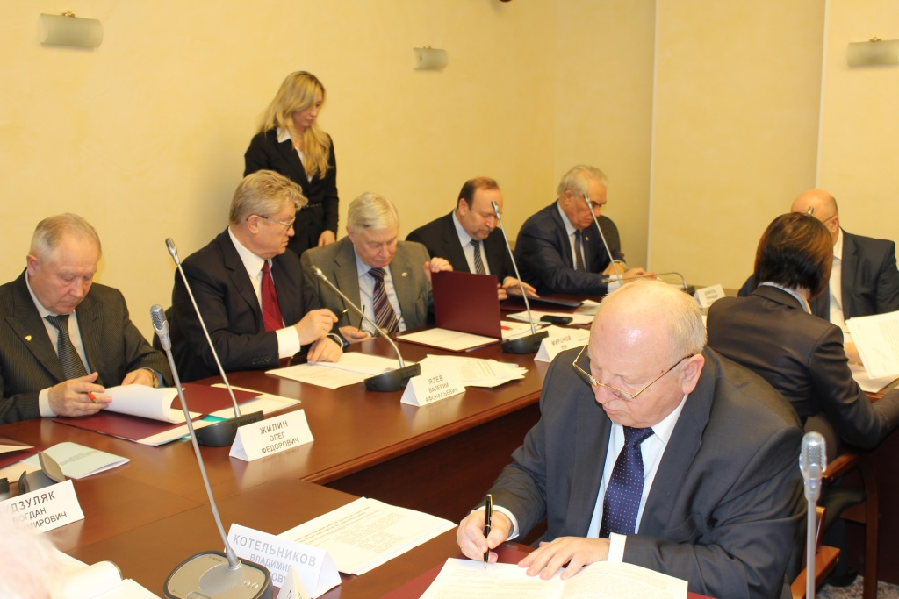

Новости кафедры
17.04.2014. На торжественном собрании, посвященном Дню Губкинца, кафедре вручена грамота, как лучшей кафедре университета в области организации и развития научно-образовательного центра
31.03.2014. Подписание соглашения о совместной деятельности по формированию и обеспечению деятельности системы сертификации и оценки профессиональных квалификаций специалистов (работников) и выпускников образовательных учреждений в области промышленной безопасности нефтегазовых объектов.
31 марта 2014 г. в Государственной Думе РФ на заседании Наблюдательного Совета Общероссийского объединения работодателей нефтяной и газовой промышленности было подписано соглашение о совместной деятельности по формированию и обеспечению деятельности системы сертификации и оценки профессиональных квалификаций специалистов (работников) и выпускников образовательных учреждений в области промышленной безопасности нефтегазовых объектов.
- Жилиным О.Ф. - Генеральным директором Общероссийского объединения работодателей нефтяной и газовой промышленности
- Мироновым Л.А. - Председателем Общероссийского профсоюза работников нефтяной, газовой отраслей промышленности и строительства
- Лопатиным А.С. - Cоветником ректора Российского государственного университета нефти и газа имени И. М. Губкина (по доверенности ректора университета)
- Будзуляком Б.В. - Председателем Совета Саморегулируемой организации Некоммерческое Партнерство «СОПКОР»
- Котельниковым В.С. - Председателем Совета Союза саморегулируемых организаций в области промышленной безопасности


12.11.2013. Премия Правительства РФ в области оразования
Распоряжением Правительства РФ от 12 ноября 2013 г. № 2090-р за работу "Многоуровневая система подготовки высококвалифицированных кадров в области диагностики и ремонта газотранспортных систем" присуждена премия Правительства Российской Федерации за 2013 год в области образования:
- Мартынову Виктору Георгиевичу – ректору университета
- Короленку Анатолию Михайловичу – декану факультета ПСиЭСТТ
- Лопатину Алексею Сергеевичу – заведующему кафедрой термодинамики и тепловых двигателей
- Аксютину Олегу Евгеньевичу – члену Правления, начальнику Департамента по транспортировке, подземному хранению и использованию газа ОАО «Газпром», профессору кафедры промышленной экологии
- Посягину Борису Сергеевичу – начальнику Центрального производственно-диспетчерского департамента ОАО «Газпром», доценту кафедры сооружения и ремонта газонефтепроводов и хранилищ
- Филатову Александру Анатольевичу – начальнику Департамента капитального ремонта ОАО «Газпром», заведующему филиалом кафедры термодинамики и тепловых двигателей в ОАО «Оргэнергогаз» (2009-2013 г.г.)
- Будзуляку Богдану Владимировичу – Председателю Совета СРО НП «СОПКОР», профессору кафедры сооружения и ремонта газонефтепроводов и хранилищ
- Велиюлину Ибрагиму Ибрагимовичу – директору экспертно-аналитического центра по оптимизации диагностических и ремонтных работ на линейной части газопроводов ОАО «Оргэнергогаз», профессору кафедры термодинамики и тепловых двигателей
- Халлыеву Назару Халлыевичу – советнику по науке Генерального директора ОАО «Оргэнергогаз», профессору кафедры термодинамики и тепловых двигателей
- Гумерову Асгату Галимьяновичу – Генеральному директору ГУП «Институт проблем транспорта энергоресурсов», профессору кафедры сооружения и ремонта газонефтепроводов и газонефтехранилищ ФГБОУ ВПО «Уфимский государственный нефтяной технический университет»
21.10.2013 по 25.10.2013. XX Международная деловая встреча "Диагностика" в Черногории
В период с 21 по 25 октября в Республике Черногория состоялась юбилейная ХХ Международная деловая встреча «Диагностика». В ее работе приняли участие 220 специалистов, представляющих 92 организации из Российской Федерации, Республики Беларусь, Республики Молдова, Украины, Болгарии, Германии, Нидерландов и Португалии.
С докладами на пленарном заседании конференции выступили Генеральный директор ОАО «Оргэнергогаз», руководитель филиала кафедры в ОАО «Оргэнергогаз» А.В.Топилин, заведующий кафедрой А.С.Лопатин.
В организации и проведении конференции активно участвовали профессора кафедры А.М.Ангалев и И.И.Велиюлин.
18.09.2013. Выездное заседание Научно-технического совета ОАО «Оргэнергогаз»
18 сентября 2013 года на базе СУ «Североргэнергогаз» состоялось очередное выездное заседание Научно-технического совета ОАО «Оргэнергогаз», на котором присутствовали члены НТС – сотрудники ОАО «Оргэнергогаз», представители ОАО «Газпром», РГУ нефти и газа имени И.М. Губкина, а также представители ООО «Газпром трансгаз Ухта» и Ухтинского государственного технического университета.
На заседании обсуждались итоги работы и перспективы развития научно-технической деятельности СУ «Североргэнергогаз» и филиала кафедры термодинамики и тепловых двигателей РГУ нефти и газа имени И.М. Губкина в ОАО «Оргэнергогаз». В ходе обсуждения доклада заведующего кафедрой А.С. Лопатина рассматривались вопросы дальнейшей совместной работы ОАО «Оргэнергогаз» и РГУ нефти и газа имени И.М. Губкина, развития новых программ и направлений, совместных НИОКР, разработки учебно-методических пособий.
По итогам обсуждения было принято решение одобрить работу филиала кафедры в 2012/2013 учебном году и утвердить план работы на 2013/2014 учебный год.
21.08.2013. Заседание Совета "Саморегулируемой организации Объединение строителей газового и нефтяного комплексов"
21 августа в университете состоялось заседание Совета некоммерческого партнёрства "Саморегулируюемая организация Объединение строителей газового и нефтяного комплексов".
Партнёрство, созданное в 2009г. объединяет более 500 организаций, осуществляющих деятельность в области строительства, реконструкции и капитального ремонта объектов капитального строительства. Один из рассмотренных на заседании вопросов был связан с организацией и проведением аттестации инженерно-технических работников членов Партнерства и участием в этой работе РГУ нефти и газа имени И.М.Губкина. Участники заседания посетили научно-образовательный центр "Энергосберегающие технологии и техническая диагностика" и познакомились с его работой.
28.07.2013 по 31.07.2013. Визит делегации в Ивано-Франковский государственный технический университет нефти и газа (Украина)
С 28 по 31 июля состоялся визит заведующего кафедрой Термодинамики и тепловых двигателей А.С.Лопатина и зам. зав. кафедрой К.Х.Шотиди в Ивано-Франковский университет нефти и газа, в ходе которого с руководством университета обсуждался комплекс вопросов, связанных с реализацией совместной магистерской программы РГУ нефти и газа имени И.М. Губкина и Ивано-Франковского государственного технического университета нефти и газа «Мониторинг и техническая диагностика газотранспортных систем».
Программа открыта в 2012 г. в рамках «Сетевого университета СНГ», созданного в соответствии с решением Президентов государств-участников СНГ с целью повышения качества и привлекательности высшего образования, укрепления сотрудничества и межвузовских связей в сфере высшего образования на территории государств-участников СНГ.
В 2012-2013 учебном году обучение по программе в РГУ нефти и газа имени И.М.Губкина успешно прошли три студента, в настоящее время осуществляется новый прием и с сентября вторая группа Украинских студентов приступит к занятиям по совместной программе.
20.06.2013. Выпуск магистров по совместной магистерской программе РГУ нефти и газа имени И.М.Губкина и Шведского королевского технологического университета
В научно-образовательном центре "Энергосберегающие технологии и техническая диагностика" состоялась защита магистерских диссертаций студентов, обучавшихся по совместной международной программе университета и Шведского королевского технологического университета "Энергосберегающие технологии для газотранспортных систем".
Государственная аттестационная комиссия, созданная приказом ректора из представителей двух университетов, отметила хороший уровень представленных работ, рекомендовав их к внедрению в отрасли.
Магистранты обучались с Стокгольме (первый год обучения) и в Москве (второй год обучения). Лекционные занятия для них проводились не только профессорами и преподавателями обоих учебных заведений, но и учеными и специалистами отрасли, что позволило связать глубокую теоретическую подготовку с практическим опытом работы и существенно обогатить программу.
Первый год обучения был посвящён изучению широкого круга вопросов, связанных с энергетикой, возобновляемыми источниками энергии, энергосберегающими технологиями, энергетическим менеджментом.
Второй год направлен, прежде всего, на углубленное изучение теоретических и практических вопросов применения эрнергосберегающих технологий и технической диагностики на различных стадиях жизненного цикла газотранспортных систем.
По завершении совместной ПРограммы её участики получают два диплома.
Руководители программы:
- от Королевского технологического университета: проф. Кучеров В.Г.
- от РГУ нефти и газа имени И.М.Губкина: зав. каф. Термодинамики и тепловых двигателей проф. Лопатин А.С.
05.06.2013. Заседание Государственной аттестационной комиссии в НОУ "ОНУТЦ ОАО "Газпром"
05.06.2013 г. в НОУ "ОНУТЦ ОАО "Газпром" под председательством заведующего кафедрой Термодинамики и тепловых двигателей Лопатина А.С. состоялось заседание Государственной аттестационной комиссии, на котором были заслушаны выпускные работы специалистов ОАО "Газпром", завершивших обучение по семимодульной программе профессиональной переподготовки "Техническая диагностика технологического оборудования КС". Это уже 11й выпуск по программе переподготовки инженеров-диагностов. Всего с 2001 по 2013 год выпущено 139 специалистов из 18 обществ и организаций ОАО «Газпром».
Первый ряд(слева направо): Пантин А. В., Ангалёв А. М., Лопатин А. С., Бабинов Е. Н., Божков Ю. Ф., Рудницкий В. И.
Второй ряд: Егоров С. И., Ларчиков Сергей Алексеевич(инженер по диагностике оборудования КС, Газпром трансгаз Сургут), Мельничук Александр Леонидович(инженер по диагностике 2 категории, Газпром трансгаз Сургут), Тишкин Алексей Анатольевич(инженер 1 категории, Газпром трансгаз Сургут), Гладковский Андрей Михайлович(начальник ЛЭС, Газпром трансгаз Екатеринбург), Терентьев А.Н.
Третий ряд: Суворов Константин Александрович(инженер дефектоскопист, Центрэнергогаз), Токарев Александр Александрович(инженер по диагностике 2 категории, Газпром трансгаз Сургут), Бабенко Виктор Вениаминович(начальник службы ЭТВС, Газпром трансгаз Екатеринбург), Алиметов Низами Надирович(инженер 1 категории, Газпром трансгаз Махачкала), Фёдоров Александр Александрович(ведущий инженер, Газпром трансгаз Ухта)

28.05.2013. On-line конференция нефтегазовых вузов по проекту Tempus
28.05.2013 на базе научно-образовательного Центра производственно-диспетчерского управления режимами нефтегазодобывающих и нефтегазотранспортных комплексов была организована и проведена заключительная on-line конференция по проекту Tempus, в которой приняли участие:

- Азербайджанская государственная нефтяная академия
- Сумгаитский государственный университет,
- Белорусский национальный технический университет,
- Российский государственный университет нефти и газа имени И.М.Губкина,
- Тюменский государственный нефтегазовый университет,
- Уфимский государственный нефтяной технический университет,
- Ухтинский государственный технический университет
- Ивано-Франковский национальный технический университет нефти и газа,
- Королевский технологический университет (Стокгольм, Швеция).
В рамках завершающегося проекта, в котором принимали участие 13 университетов из Азербайджана, Белоруссии, Великобритании, Польши, России, Украины, и Швеции создан межуниверситетский международный портал, проходило обучение представителей университетов по вопросам трансфера технологий, создан ряд инновационных предприятий, реализуется совместная подготовка аспирантов и магистров, приобретено и передано университетам оборудование для проведения конференций между университетами, представлена совместная экспозиция на 3 международных выставках (Москва, Минск, Киев), издано 2 совместных сборника трудов университетов, задействованных в программе.
- Координатор проекта – профессор Королевского технологического университета и РГУ нефти и газа имени И.М.Губкина В.Г.Кучеров.
- Координатор по России – заведующий кафедрой Термодинамики и тепловых двигателей проф. А.С.Лопатин.
14.05.2013. Визит делегации ОАО «Оргэнергогаз» в университет
14.05.2013г. состоялся визит делегации ОАО «Оргэнергогаз» в университет. В ходе визита в ректорате обсуждались вопросы многостороннего сотрудничества, планы и перспективы работы филиала кафедры термодинамики и тепловых двигателей в ОАО «Оргэнергогаз». Участники делегации познакомились с работой кафедры, научно-образовательного Центра производственно-диспетчерского управления режимами нефтегазодобывающих и нефтегазотранспортных комплексов, провели встречу с бакалаврами и магистрами факультета проектирования, сооружения и эксплуатации систем трубопроводного транспорта.
Заключительным этапом визита было ознакомление с работой научно-образовательного Центра «Энергосберегающие технологии и техническая диагностика», о работе которого рассказали заведующий кафедрой Термодинамики и тепловых двигателей проф. Лопатин А.С. и профессор гафедры Суховерхов Ю.Н. В состав делегации ОАО «Оргэнергогаз», возглавляемой Генеральным директором Топилиным А.В., входили заместитель Генерального директора по диагностике Ангалев А.М., заместитель Генерального директора по корпоративным отношениям Страшинский В.А., заместитель Генерального директора по экономике и финансам Левин М.А., советник Генерального директора по науке Халлыев Н.Х., заместитель главного инженера по НИОКР Егоров С.И., заместитель директора ЭАЦ «Оргремдигаз» Решетников А. Д., главный инженер АЦГП Прохожаев Т. О.
19.04.2013 по 24.04.2013г. Визит НОЦ в Государственный Сахалинский Университет
С 19.04.2013 по 24.04.2013г. состоялся визит делегации РГУ нефти и газа имени И.М.Губкина в составе
- первого проректора по учебной работе проф. Кошелева В.Н.,
- зав. каф. Термодинамики и тепловых двигателей проф.Лопатина А.С.,
- зам. начальника УМУ проф. Дяченко И.Ф.,
- профессоров Бесселя В.В.,
- Дяченко И.Ф.,
- Кучерова В.Г.

В ходе визита заведующий кафедрой Термодинамики и тепловых двигателей проф. Лопатин А.С. выступил перед студентами университета с лекцией об использовании энергосберегающих технологий и технической диагностики на различных этапах жизненного цикла МГ.